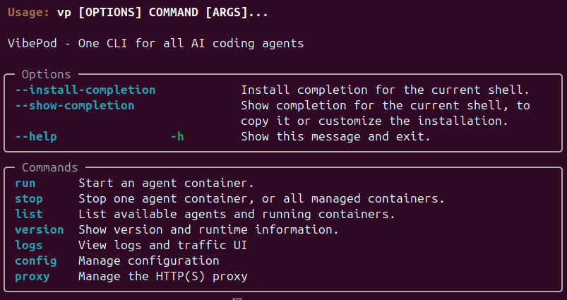
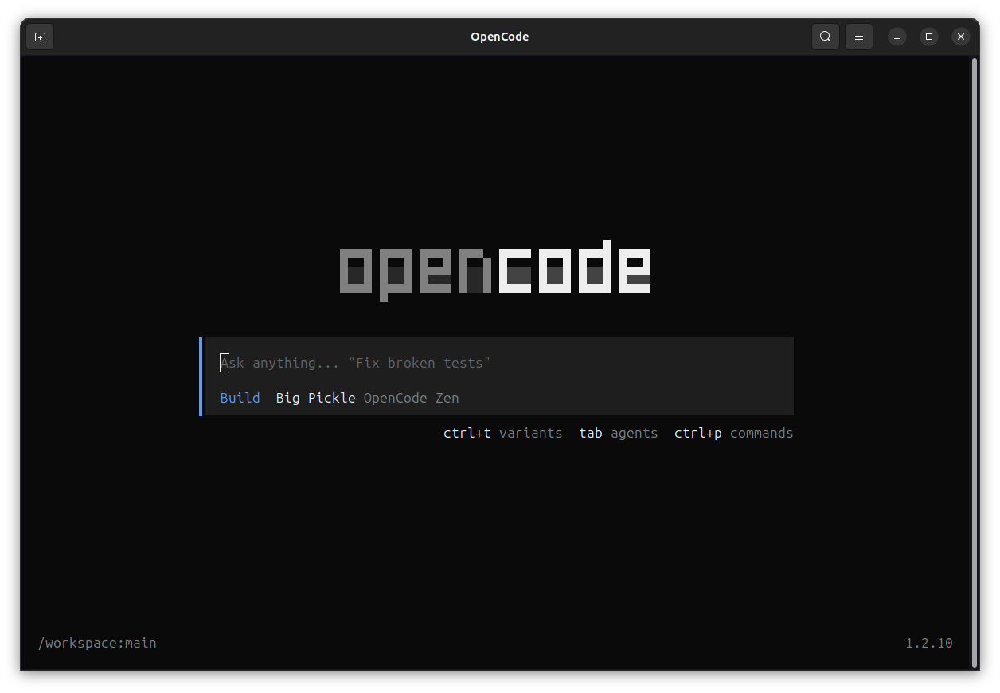

Unified local command surface
Use one CLI to run and manage multiple coding agents in the same local flow.
Proof point: single entrypoint design for multi-agent tasks.
Open-source CLI
Install VibePod from PyPI, run coding agents locally, and switch between agents without breaking flow.

Quickstart
Install from PyPI, verify your setup, then use the README to run and switch agents in local workflows.
python -m pip install vibepod
vibepod --helpTip: pin versions in automation with python -m pip install vibepod==<version>.
$ vp version
VibePod CLI: 0.2.1
Python: 3.12.3
Docker: 28.1.1How it works
Run vp list to see which agents are available in your local setup.
Note: vp list also shows active workspaces.
Start work with vp run AGENT and switch agents by rerunning the command with a different agent.
Note: the current folder is used as the active agent workspace.
Use vp ui when you want a local UI to monitor and manage your active workflow; it opens automatically in your default browser.
Core features
Use one CLI to run and manage multiple coding agents in the same local flow.
Proof point: single entrypoint design for multi-agent tasks.
Move from one coding agent to another in seconds when the task changes.
Proof point: less context churn between tools and prompts.
Keep behavior predictable by using the same local CLI flow across projects.
Proof point: repeatable commands across developer machines.
Script local agent runs and switching workflows directly from shell tooling.
Proof point: CLI ergonomics map naturally to automation systems.
Install once, run locally, and keep switching agents without friction.
Proof point: terminal-first interaction cuts UI overhead.
Adopt the default flow or customize around your team’s processes.
Proof point: GitHub-based development and contribution model.
Tool screenshots
Included screenshots cover Auggie, Claude Code, GitHub Copilot, Gemini, Mistral, OpenAI Codex, and OpenCode.



FAQ
Install from PyPI using python -m pip install vibepod, then use the README for command examples.
Yes. The core workflow is local CLI usage so you can run and switch coding agents from your machine.
Yes. Run vp --install-completion to enable auto-complete and speed up command entry and agent selection.
The current working directory where commands are run is used as the active agent workspace.
Yes. The same CLI flow used locally can be scripted for CI/CD jobs.
VibePod is built for switching across supported coding agents from one CLI. Confirm current support in the repo docs.
Use the GitHub issues page to follow changes and request features.
Install from PyPI, verify once, and keep moving between agents as your task evolves.